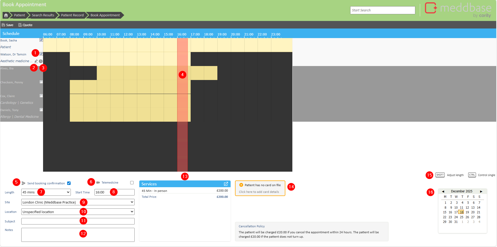
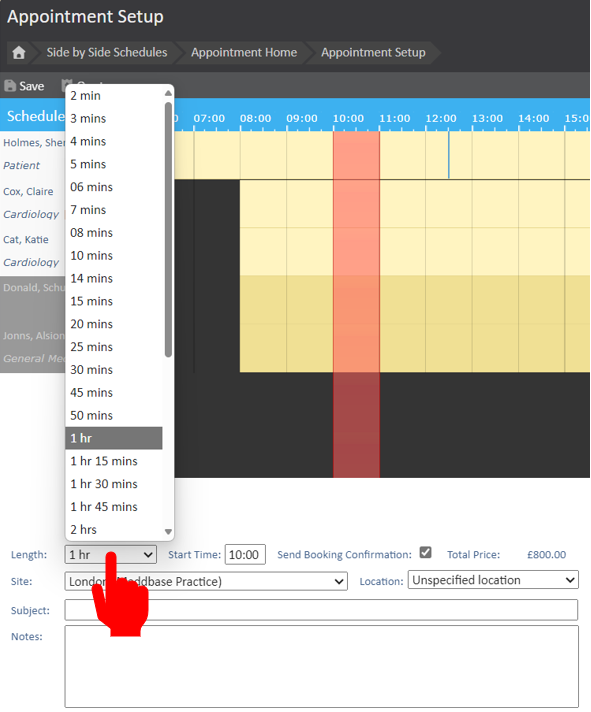
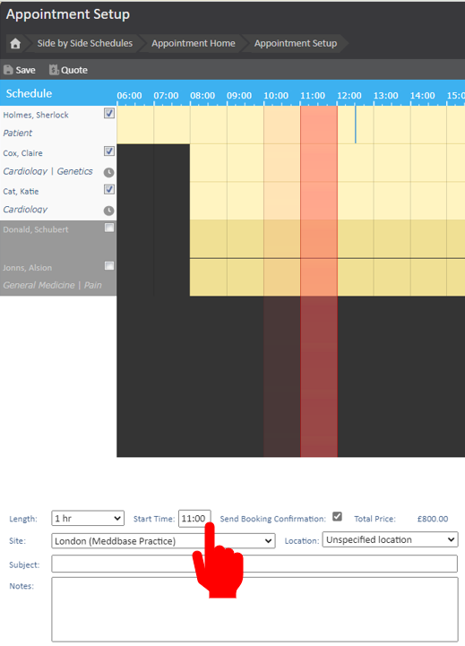
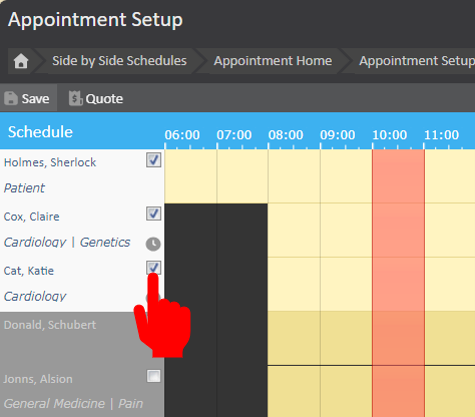
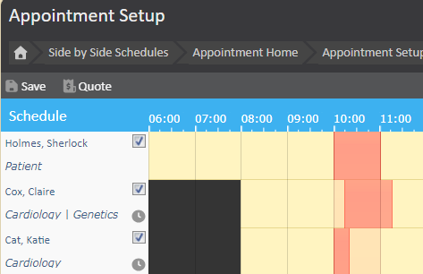
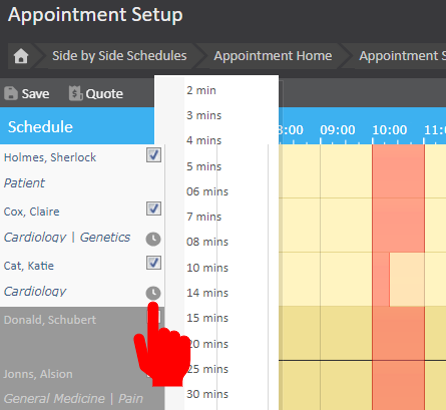
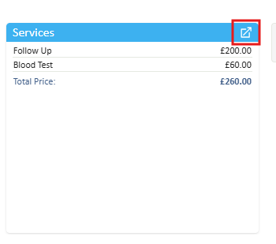
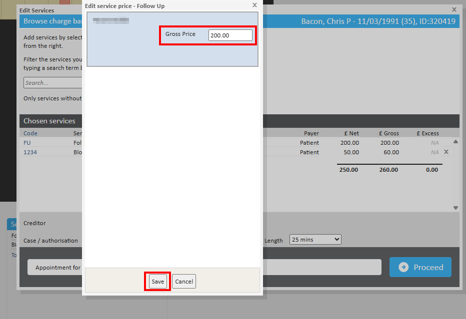

The Booking Confirmation page is the last stage in the booking process, allowing users to make any final changes to the appointment before it is confirmed. This functionality enhances the booking experience by providing options for adjusting appointment details, ensuring that all necessary modifications can be made before confirmation.
This article aims to guide users through the features and functionalities available on the Booking Confirmation page, enabling them to customise appointments according to their needs.
The booking confirmation page allows the booking user to carry out additional functions relating to the appointment.

From this page, the user can do the following:
Once you have reviewed the settings and confirmed booking details, click Save to save and book the appointment.
* The telemedicine options will only be displayed if chamber has telemedicine set up and the appointment type has Telemedicine configured.
To change the overall appointment length, click the drop-down list next to Length and select the desired length. This will then increase the width of the red bar on the screen to reflect the new duration.

To change the appointment start time, you can enter a specific start time by typing in the box after "Start time." This can be entered to the nearest minute.

Alternatively, by clicking and holding the left mouse button, you can drag the red bar left or right to change the start time of the appointment. The bar will snap to 15-minute intervals.
Modifying and adding attendees can be facilitated by the tick box next to the attendee's name. The selected attendees will be highlighted in a brighter yellow.
If you wish to swap the attendee, untick the attendee you no longer desire and tick the new attendee.
Multiple attendees can be selected just by ticking the box next to their name.

If you wish to stagger the attendee, you have two options: You can stagger the start time and or the length of the attendee.
To stagger the start time of the attendee, hold CTRL on your keyboard and click and drag the red bar on the panel of attendee.

To alter the length of a specific attendee, hold down SHIFT on your keyboard and click and drag the red bar to the desired length. Alternatively, you can click the Clock icon next to the attendee's name and change the length to a specific time.

After adding services to an appointment, you can manually edit the price. To edit the price of a service from the Appointment Booking page, open the Service Picker.

On the Service Picker window, click the price you want to edit, change the price as desired, and click Save once finished.
